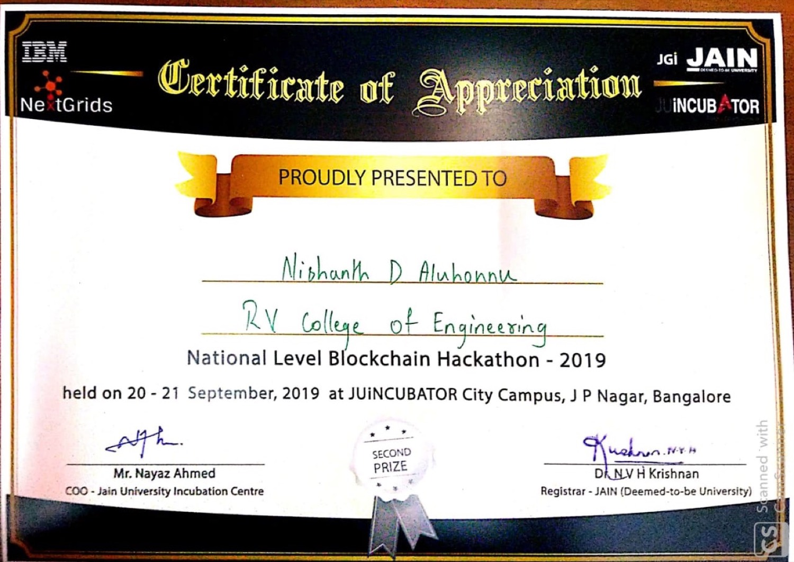

National Blockchain Summit Hack · IBM, IEEE and the Jain University Incubation Centre
Background checks on a blockchain
Most blockchain problems set to students in 2019 did not need a blockchain. This one arguably did, which made it more interesting than the result suggests.
The Jain University Incubation Centre ran a national-level blockchain hackathon on the 20th and 21st of September 2019, at their City Campus in J P Nagar, Bangalore, with IBM, IEEE and NexGrids behind it. Around 50 teams registered and the top 30 were called in for an overnight twenty-four hours. Four of us went: Rajat Keshri, Vijay Koundinya, Mahadev Maitri and me, by then in our fourth year.
IBM opened with a session on blockchain and how their cloud platform worked, and then handed out the problem.
01The problem
Background verification of employee details, built on blockchain, running on the IBM cloud platform.
In 2019 that framing was everywhere, and most of the time it deserved the eye-roll it got. The standing joke about blockchain projects, that ninety per cent of them are a database with extra steps and worse latency, was mostly true, and most student hackathon briefs of that year were exactly that. Supply chain on a blockchain. Land records on a blockchain. Voting on a blockchain, which is actively a bad idea.
02Why this one is not the usual joke
Employment background verification is one of the few cases where the awkward properties of a distributed ledger line up with the actual shape of the problem.
Think about who is involved. A candidate claims a degree and three previous jobs. A prospective employer needs those claims checked. The universities and the former employers hold the truth. A background-check agency sits in the middle charging for the privilege of asking them, slowly. None of these parties reports to any of the others, none of them will accept another's database as authoritative, and the candidate, whose data it is, has the least control of anyone.
That is a genuinely awkward trust topology, and it is the one situation where a shared append-only record between mutually suspicious parties is not obviously the wrong tool. Nobody has to host it. Nobody has to be believed. A university attests once, and every future employer reads the same attestation instead of re-asking.
The question worth asking of any blockchain proposal is not "could this be a database?" It is "whose database would it be, and would everyone else accept it?" Here, plausibly, nobody's and no.
Whether our particular twenty-four-hour version of that was any good is a separate question, and one I cannot answer.
03A repository containing one word
There is a repository for this project. It was created on the 18th of September 2019, two days before the hackathon, presumably while setting up. Its README, in full, reads:
# Blockchain-
ggThat is the entire surviving artefact. Whatever we built over those twenty-four hours never made it in. The link was recorded as "source code" in the document I wrote that December, which means that at the time I believed something was there, or intended for something to be.
I am leaving the repository exactly as it is. An empty repo with a two-letter README is a more honest record of how that weekend ended than anything I could write into it now.
04Result
Second place: ₹20,000, gift coupons and national-level certificates.
It is the only one of the six placings in this archive that is not a first, and it came at the end of the run rather than the start: the seventh competition in twelve months, with the same four people who had won at SLAC in March. Whatever the reason, second out of thirty at a national event with IBM judging is not the part of this I would change.

Two months later came the last one, and we did not win that either.